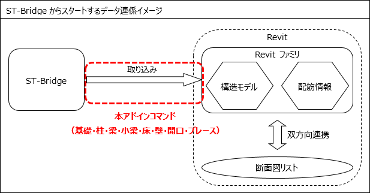

|
構造関係のソフトが多く対応しているデータ交換標準ST-Bridgeの情報を、Revit に素早く取り込むことで、BIMモデル入力の短縮、強いては、構造設計業務の効率化を図ることが可能である。 |
| 本『ST-Bridge Link』は、下図の業務フローを想定し、作業の効率化を図ることを目的としたデータ変換を行うコマンドである。 |
|
 |
| 本アドインが取り込むSTBファイルは各種一貫構造計算ソフトウェアから出力されるものを想定している。対象バージョンのST-Bridgeで定義されていない情報や対象バージョンで利用できない情報は入出力の対象外とする。 |